1 武器・ウェポン全体
1.1 初動での武器入手
初動では、いかに早く武器を入手し、敵を撃つかに全力を注ぐことになる。その時、素手でも攻撃できることを忘れないようにしたい。殴れば結構なダメージが出せるし、何よりも敵はかなり焦る。銃を持ったときの死に安さも向上するので、積極的に殴りたい。 また、味方と同じところにいたら殴り殺すのもアリだ。４回当たれば死ぬので、ほとんどダメージを受けずに殺せる。なんなら武器を持っていても殺すことができる。また、初動ではショットガンなどの１発のダメージが大きい武器を優先して拾うのがおすすめだ。
1.2 おすすめの武器組み合わせ
どの武器を持つかについての選択を難しくしているのは、入手性だけではない。敵の死体からたくさんの武器を拾える状況でも、その中でどれを選ぶかにかなりの迷いがある。それは２つしか持ち歩けなく、また、その武器にも様々な種類、タイプがあるからである。 その中でどういうのが良いか自分なりに提案したい組み合わせを紹介する。
・R99とR301
これは近・中距離での戦闘に備えた組み合わせだ。しかも入手性が最高のライトアモで固めてあるので玉が尽きることはほぼ無い。けっこー強いと思う
・フラットラインとマスティフ
フラットラインはすべての距離間で最強クラスの安定感がある。それにちょっとした冒険としてマスティフを入れている。楽しさと手堅さのどっちにも振り切れなかった人の最終のてもち的な感じだ。
・R99とボルト
かなりピーキーな性能となるが、近距離、ちょっと無理をして中距離で、最強となれる。エイムがいい感じになってきてちょっと攻め込んで勝ちたい。という人が持つべきだが、両方とも燃費最低の武器で、しかも銃弾の種類が異なるのでバックの殆どをたまに使うことになる。
かなり偏った内容となったが、以上の組み合わせを参考に自分なりのお気に入りの組み合わせを見つけて楽しもう。
1.3 投げ物関連
投げ物とは、グレネード、アークスター、テルミットのことである。これらは投げて相手の近くなどで発動させることで相手にダメージを与えたり、移動を制限して非常にいやな思いをさせる。プレイヤーが使いすぎてバックの使用量が増えてしまい、今はあまり使われなくなってしまった。しかし、テルミットは未だ強力であると言われている。
1.4 フルキット武器(金武器)
戦場で運がいいと、金武器を拾うことがある。これは、アタッチメントが最初から最高レベルで付いている武器である。また、ケアパケ武器とは違って戦場で手に入る。あくまでも普通の武器が最強まで強化されたものと言うことである。見つけたら積極的に使ってほしいが、スナイパーなどかなり尖った性能のものは使い手を選ぶ。金武器だから絶対使わないと勝てないとかでは決して無いので、あくまでもいい武器とだけ思っておこう。
1.5 ケアパケ武器とは
まず、武器にはフィールドに落ちている普通の武器と、ケアパッケージからしか入手できないケアパケ武器がある。ケアパケ武器は銃弾を補充することができないが、最初から強い状態で利用できる。また、ケアパケ武器はシーズンによって変化する。
2 ライトアモ
2.1 R99
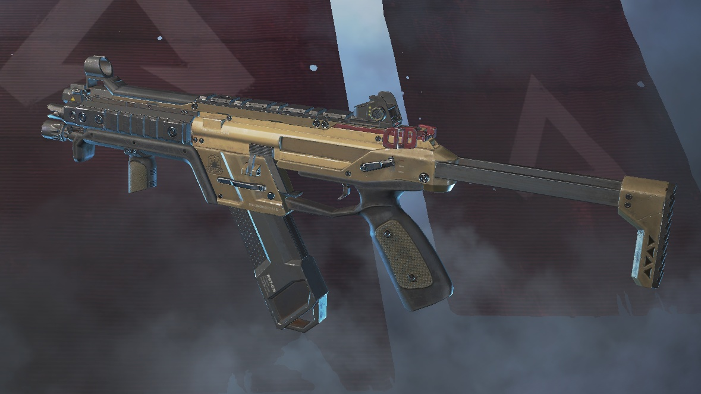
１番人気の武器で、最近までケアパケ武器となっていた。レート(銃弾の発射速度)が高く火力がある。しかし、銃弾の消費が激しくバックの容量の多くをそれに割くことになるのが欠点。しかし、レートの高い武器で敵を倒したときの快感は夢中になるものがある。
総評 強い！
2.2 R301

比較的安定した武器です。程よく手に入り程よく当たる。程よく火力もあるととても無難ですが、正直尖っていない武器はゲームでわざわざ使う気にはならないというのが現実で、ゲーム後半に敵の持ち物を見てもあまり見つけられません。
総評 強いけど使う気ならん
2.3 オルタネーター
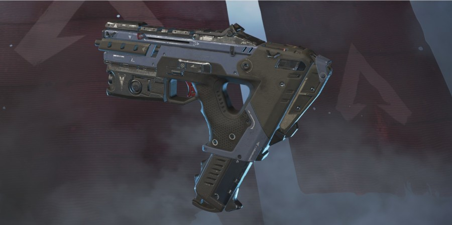
R301を命中しやすくしたような武器です。火力は低いですが、よく当たるので当たらない人が99を持つより遥かに強いです。かなり前にディスラプター弾というアタッチメントを装備できたときがあり、そのときは最強の名を欲しいままにしていました。しかし流石にやばすぎということで消えてしまいました。
総評 初心者武器
2.4 RE45
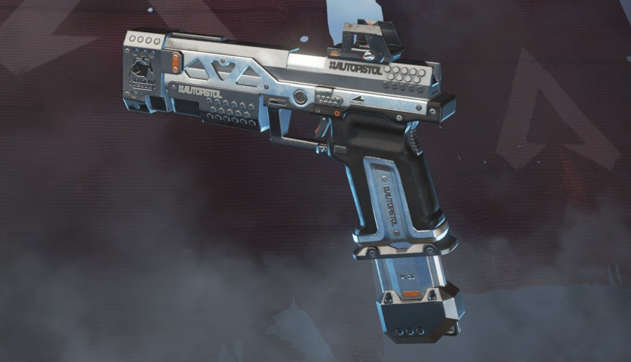
マシンピストル的なやつです。レートが高いですが、ダメージは低いです。正直言ってライトアモの中で一番使っている人を見かけない武器です。
総評 カス
2.5 P2020
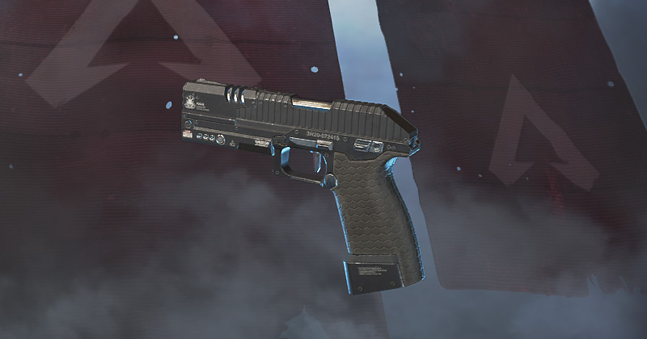
単発で連射力が低く、ダメージも低い正真正銘のゴミ武器です。しかし、ハンマーポイント弾というアタッチメントをつけると、肉へのダメージは結構強いです。その強さをたまたま生かせて勝つと、最強！となりますが実際はゴミです。
総評 ハンマーポイント楽しいね
2.6 G7スカウト
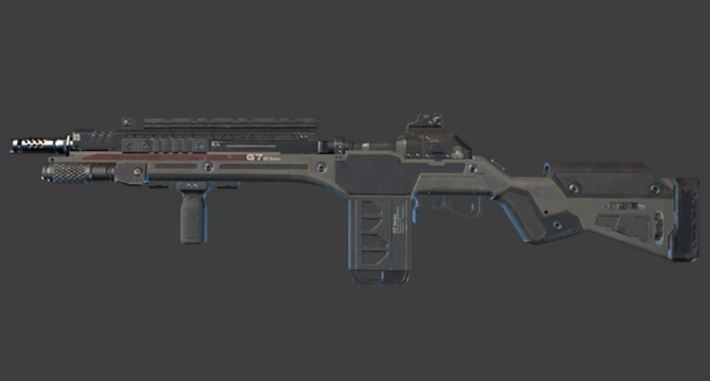
スナイパーライフル的なやつです。詳しく言うとマークスマンライフルというやつです。単発ですがダメージは結構あります。人気はありますが、人に使われるとかなり腹たちます。
総評
うざい！
3 ヘビーアモ
3.1 ウイングマン
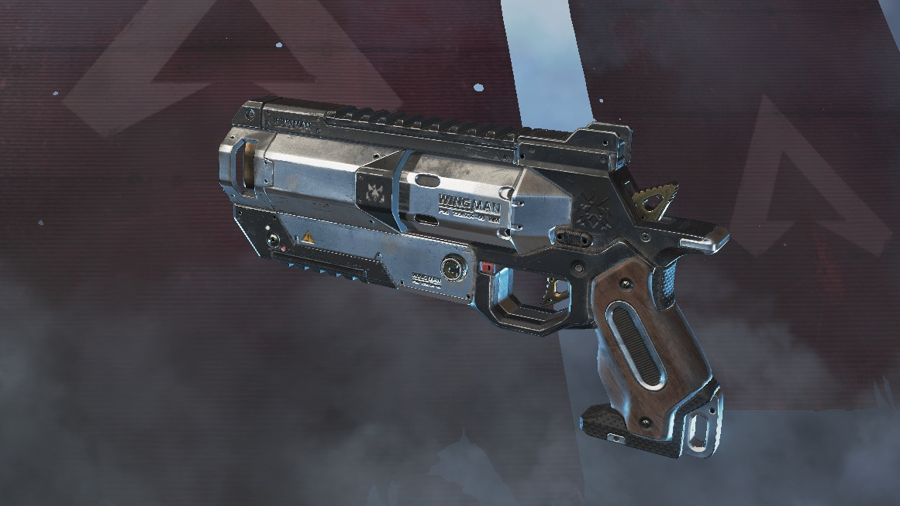
マグナム的な威力の高いハンドガンです。99並に人気があります。最近は球数が減りすぎて人気がなくなってきましたが、それでも根強い人気を持っています。DPSも高いですが、単発ということもあってヘッドショットを狙いに行きやすいのがポイントです。
総評 上級者向け
3.2 ヘムロック
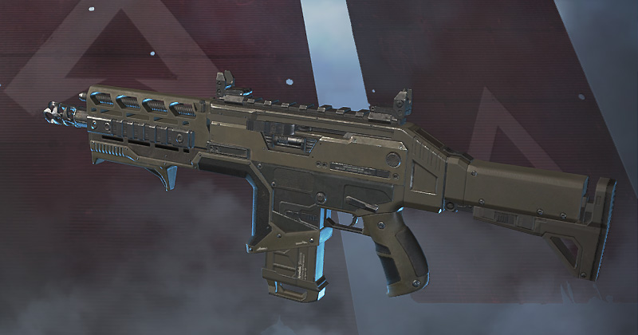
３点バースト、単発を選択できるアサルトライフルですが、フルオート射撃はできません。中遠距離で真価を発揮しますが、初心者の方々が使うにはかなり癖が強いです。しかし、バーストの強さに玉持ちがよく、球切れを起こしにくいというものがあります。
総評 強い？
3.3 フラットライン
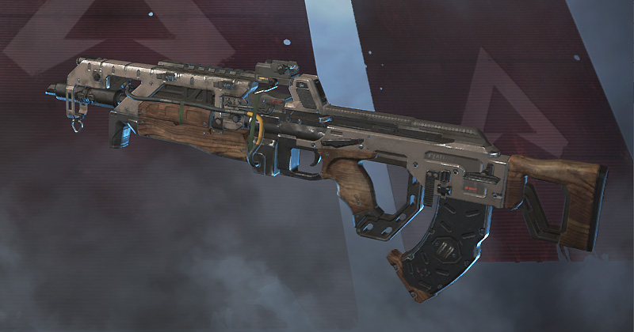
比較的レートが低めのアサルトライフルですが、R301のような安定感と高威力を両立した良武器です。球持ちは普通です。オルタネーターの次に初心者の方々におすすめできる武器です。
総評
バランス最高！
3.4 スピットファイア
LMG(ライトマシンガン)と呼ばれる、装弾数が多い武器種のヘビーアモバージョンです。レートが低いです。しかし、装弾数が多いので戦っている途中でリロードを強いられることがなく、好きなタイミングでできます。また、撃ち続けると謎に照準が安定して敵をねらいやすいです。
総評 そうでもないけどそれがいい
4 エナジーアモ
4.1 ボルト
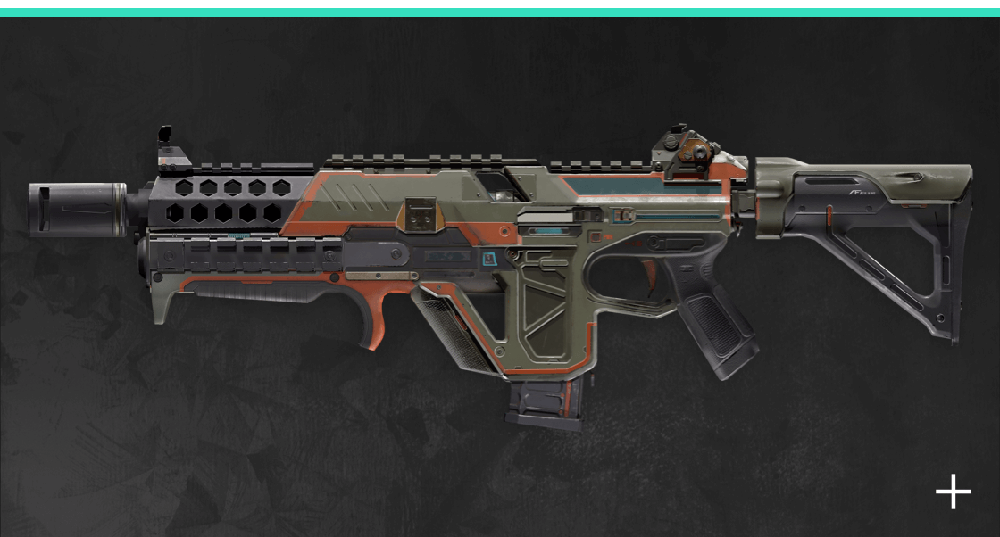
99と双璧をなす、最強武器です。最近追加されました。エナジーアモは比較的少なく、レートが高いため消費が激しいにもかかわらず、超人気があります。クソ強いからです。使いにくいと言ってる人もいますが、普通に最強です。
総評 最強！！！！！
4.2 ハボック
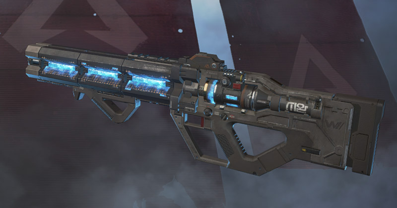
エナアモ版アサルトライフルです。撃ち始まるのが遅い（発射までラグがある）ので使いにくいですが、ダメージは強いです。
総評 癖強め
4.3 ディボーション
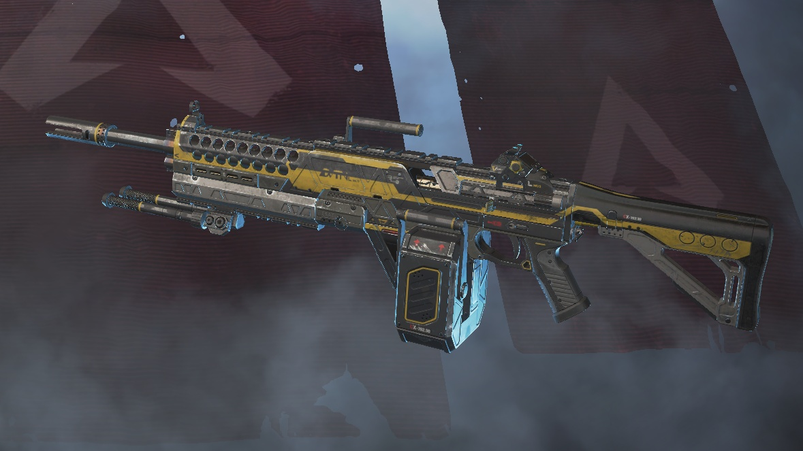
エナアモ版LMGです。これはかなり賛否が分かれる武器です。最強という人もいれば、使えないという人もいます。というのは、レートが撃ち続けると上がっていくという珍しい特徴があるからです。しかし、レートが最高レベルまで行くと、火力は最強となります。たまの消費も最強です。また、そのレートが上がるのが早くなるターボチャージャーというアタッチメントがあります。
総評 強い人が使うと強すぎる
4.4 Lスター
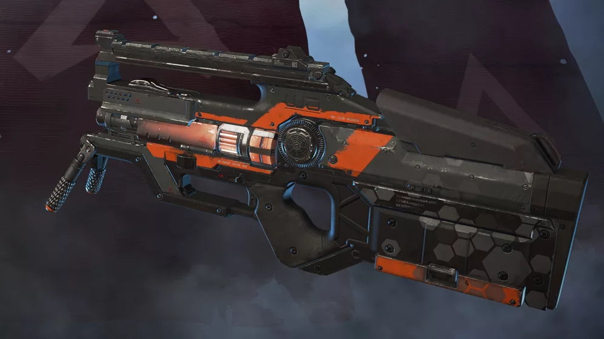
一応LMGということになってますが、結構無理ある設定です。まず、この武器のリロードはかなり特殊になっています。撃ち続けるとオーバーヒートしてしまい、その場合リロードが必要になるのですが、問題はこっからです。オーバーヒートする前にトリガーを離す、つまり撃つのを中止するとオーバーヒートのゲージ的なものは回復します。このようにオーバーヒートしないように調節しながら撃てば、リロードは必要ないのです。
総評 使いにくい
5 スナイパーアモ
5.1 ロングボウ
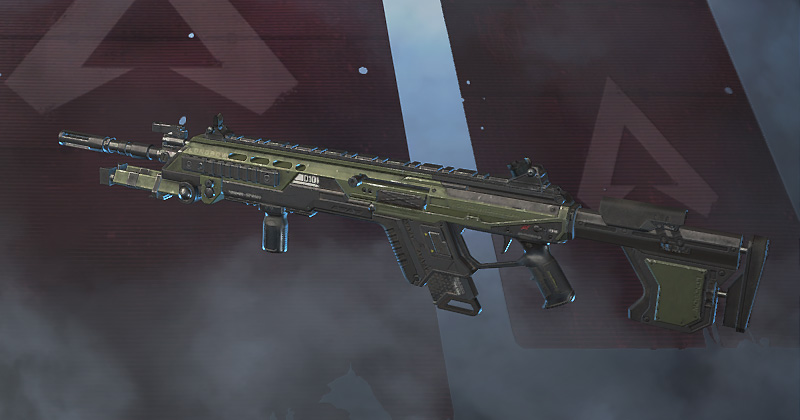
標準的なスナイパーライフルです。特に、性質は無いですが、スナイパーか疑いたくなるほど装弾数があります。
総評 良くも悪くもスタンダード
5.2 センチネル
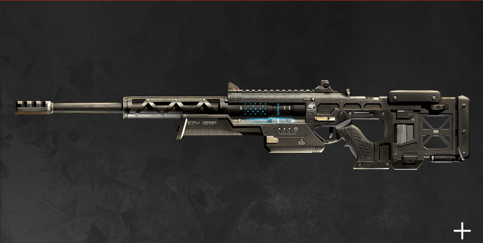
シールドセルを使って強化できるスナイパーですが、使ってる人なんていません。まじのクソ武器です。嫌われた結果、ウンチネルというかっこいい名前も手に入れました。
総評 うんち
5.3 チャージライフル
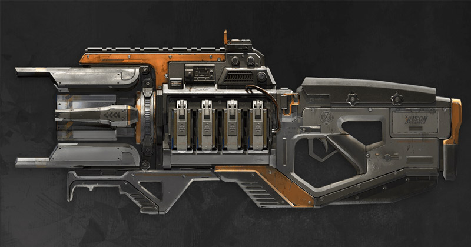
かなり特殊な射撃特性があります。最初にレーザー的なビームが出て、微妙なダメージを与えます。数秒すると、でかいビームが出てダメージが稼げます。この特性を生かして、進化シールド(ダメージを与えれば与えるほど育つアーマー)を育てる輩がいます。嫌われます。嫌われた結果、そういうゴミみたいな輩をチャー牛(チャージライフルでダメージを稼いで無難に勝ちたがるチー牛みたいなやつ)と言います。余談ですが僕はよく使います(青木)
総評 チー牛御用達
5.4 トリプルテイク
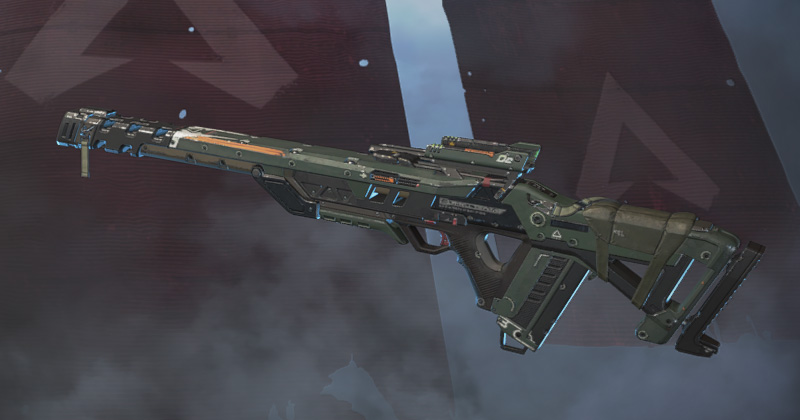
一度に３発玉がでるスナイパーライフルです。その３発が横に広がるので、結構当たります。馬鹿にしてると普通に殺されます。また、スナイパーですが謎に近距離も強く、開幕（降りてすぐ）で拾ったらラッキーです。
総評 舐めてると死ぬ
6 ショットガンアモ
6.1 マスティフ
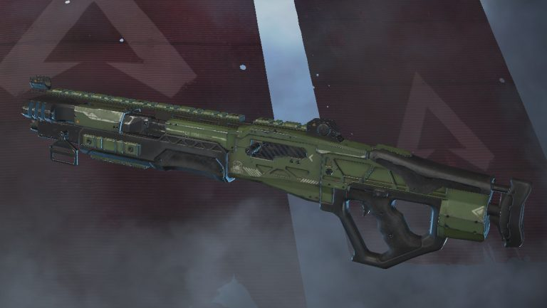
キモイ反動がありますが、かなりポテンシャルが高い武器です。角で待ち伏せてこれで奇襲しかけると、かなり相手がイラつきます。また、元ケアパケ武器です。
総評 当たれば強い
6.2 EVA-8オート
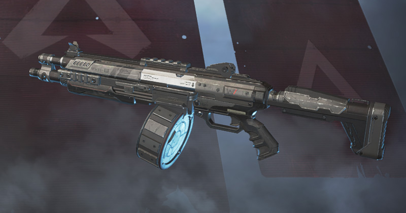
フルオート射撃できるショットガンです。玉の拡散が特徴的で、8を描いた形で拡散します。
総評 強め
6.3 モザンビーク
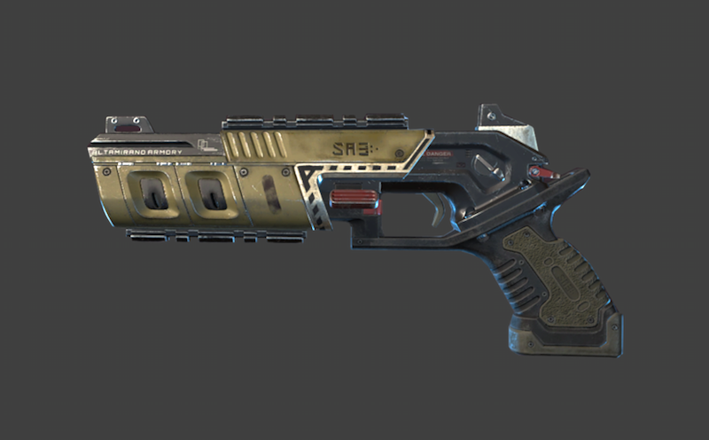
正真正銘のゴミです。ハンマーポイントをつけると、肉(アーマーをつけていない敵)一撃ですが、使う人はあまりいません。特に、装弾数が少なすぎてほとんどの場合全弾当てないと勝てません。全弾当てても死なない場合もあります。使わないほうがいいです。
総評 使わないほうがまだまし
7 ケアパケ武器
7.1 クレーバー
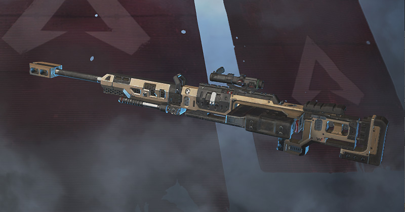
超強いスナイパーライフルです。ずっとケアパケ武器です。基本ダメージ145、ヘッドショット435という基地外です。(アーマー最大の状態で425)見つけたら当てる自信がなくても使うのをお勧めします。高所をとって、射撃しているだけで、相手は頭を容易に出せなくなります。
総評 最強スナ
7.2 プラウラー
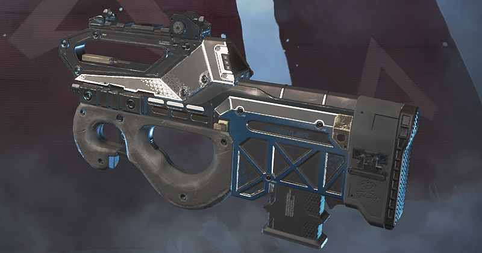
間違いなくボルトがケアパケ武器になるだろうと思われている中、ケアパケ武器に認定された武器。普段はバーストですが、セレクトファイヤレシーバーをつけると、フルオート射撃できるという特性でした。今はケアパケ武器なので最初から選択できます。装弾数が多く、威力も高いので、近距離では99に迫るDPS、ボルトに迫る総ダメージを出せる、究極的にいかれた武器になっています。
総評 やばい
7.3 ピースキーパー
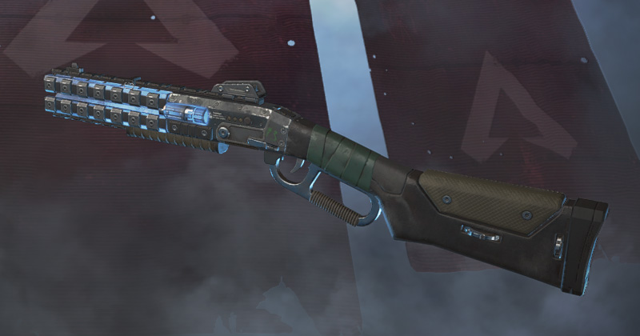
ピーキーと言われ、遠い過去では大人気のショットガンでした。今はケアパケ武器で偶に使われる、位の存在になってしまいました。エイムしていると少しずつ拡散範囲が狭くなり、威力が収縮する性質があります。
総評 強かった